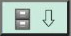
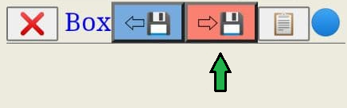
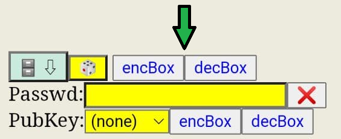

マルチクリップボード
--モバイルのブラウザがメモ帳に早変わり
開発の背景
(お急ぎの方は、こちらをクリックして「遊び方」をご覧ください。)
このアプリは、ガジェットウェアとしてスタートし、JavaScriptのスキルを磨くための遊び道具として考えています。ユーザーインターフェースは原始的に見えるかもしれませんが、どうかこのプロジェクトをフォークして、より洗練されたレイアウトを手に入れてください。
また、新しい機能を追加するアイデアがあれば、github上でissueを作成してください。作成頂けましたら開発を検討致します。
ユーザーインターフェースの専門家の中には、このようなソリューションを実装するためにReactJSやAngularJSなどのJavaScriptフロントエンドフレームワークを使うことを好む人もいるかもしれませんが、私はできるだけ依存関係を少なくし、対応する機能のために必要な外部JavaScriptのみを含めることを好みます。
このウェブアプリの典型的な使用例
- Just as phone book keep contact info like phone, email etc.(somebody would say: I already got my address book on mobile, what is the point? Please don't forget: g👓gle is watching on you...);
- ローカルでの保存と読み込みが可能な、シンプルなメモ帳アプリ（このReadMeの一部は、実際にこのウェブアプリを使って入力しています）;
- WhatsAppやTelegramなどのインスタントメッセージングアプリでよく使うフレーズを保存しておき、素早くコピー＆ペーストすることができます;
- リンクやお気に入りをオフラインで保存し、GnuPG/パスワードでリンクを暗号化することで、おせっかいな人に保存されたリンクを見られないようにします（特にポルノサイトに便利です🙈）
- 短いテキストメッセージをGnuPGで暗号化するためのクイック＆ダーティなインターフェースとして使う;
- LinuxのbashシェルのようなCLI（コマンドライン・インターフェース）のユーザーであれば、長いコマンドの簡単な小切手帳になります（これは私も使っています）;
- Web-hookをトリガーするためによく使うREST APIのURLを保存します
本アプリの制限事項
- un-do機能（またはctrl-Z）がありません。大きなブロックを選択した後、誤ってキーボードの別のキーを押してしまうと、せっかく入力した文字が1文字になってしまいます。せっかくのタイピングが1文字になってしまうので、こまめに保存しましょう;
- 使いやすさと個人情報の保護の間には究極の矛盾がありますが、このアプリもまた然りです.
テキストボックスに入力した内容を平文のまま保存しておくと、おせっかいな人に情報を見られてしまうかもしれません。逆に、入力のたびに暗号化を行うと、面倒な作業になるだけでなく、ストレージの容量も増えてしまいます（暗号化されたテキストは、少なくとも20%以上の容量を必要とし、平文の文字列がもっと短ければ、この無駄はさらに増えるでしょう）.
このアプリの概要と内部構造
現代のほとんどのブラウザでは、個々のWebサイトやURLの設定を保持するために、ローカルブラウザにストレージスペースがあります。通常の環境では、このストレージはサイトごとに分離されており、5MBのストレージサイズを持っています。現在の技術水準からすると、この数字は大したことがないように思えるかもしれませんが（2100万画素の写真画像を生のまま1つのファイルにすると25Mもの容量になります）、これをプレーンなASCII文字で数えると 欽定訳聖書を783,137語（1語あたりの平均文字数を6とする）保存することができます.
このローカルストレージは、Key-Valueペアとして構成されています。これは、このアプリがあなたの入力情報を保存する基本的な方法でもあります。また、プライベート/シークレットモードでは、ページを閉じたときにブラウザがすべてのローカルストレージをダンプしますので、ページを閉じる前にコンテンツをエクスポートすることをおすすめします（エクスポートについては後ほど説明します）
しかし、このアプリを通常の/非プライベートブラウジングで使用した場合、保存されたコンテンツは、意図的に消去しない限り、ブラウザ内に保持されます.
KeyとValueのペアがどのように保存されるかについての議論に戻ると、次のような図式を想像することができます：このローカルストレージバスケットに情報を入力し続けると、特定の保存された値やアイテムを取得する必要があるときに、多くのKeyが必要となる状況になります。そこで、Keyを整理するために「ページ」を追加しました.
あなたの情報はストレージに平文で保存されているので、もし誰かがあなたのデバイスでブラウザをポップアップしてこのサイトにナビゲートすれば、その見知らぬ人は保存されている情報をすべて読んでしまいます。このようにして、パスワードの暗号化はあなたを助けてくれるのです。しかし、注意していただきたいのは、GnuPGは堅牢な暗号化方式であり、パスワードを忘れた場合に平文に復号する方法はありません
また、PubKeyというコンボボックスがあると思いますが、これは非対称暗号の公開鍵を保存するためのものです。GnuPGについて既にご存知の方は、その扱い方をご存知でしょう。また、ウェブ上でこのキーワードをググって、GnuPG非対称暗号化についての自己学習を始めることもできます.
このアプリで遊ぶには
(このパートは、技術者ではない人たちが簡単に始められるように修正されています）。
簡単な手順をご紹介します.
- 保存されているコンテンツを大きなボックスに入力する;
- 左上のボックスに「Key/handle」を入力します;

- .キャビネットキーの 🗄⇩ /  を押すだけで、入力した内容が保存されます, 以上で入力は完了です
-
ページコンボが指定されている場合（新規ページ）, アプリはページ名の入力を求めます。確認されると、入力した内容がテーブルに保存され、コンボボックスを選択して対応するページを表示することができます
このアプリが提供するその他の機能
- 大きなボックスの上部にボタンが表示されていることにお気づきでしょうか;

このボタンをクリックすると、ファイル選択ボックスがポップアップし、ファイルを選択することができます。そして、このウェブアプリがファイルを読み込んで、ボックスにコンテンツを読み込みます。(テキスト以外のファイル(例えば.jpg/.pdfファイル)を読み込もうとすると、ボックスにゴミが表示されるので、右下のクリアボタン(赤い十字ボタン❌) でボックスをクリアすることができます

- The button near to the clear button is a copy button (icon of a clipboard 📋 ), it will select and copy the box content.

- The arrow disc ⇨💾 button is for save/export the box content into an external text file,

when click it your browser will prompt you for a filename, and you will 'Download' a text file with the typed content in the box to Download directory of the browser.
- 青い点 🔵, は、保存されていない修正を表します

このドットは、ボックスに入力された内容を変更すると赤RED 🔴 に変わり、他の場所に行っても変更内容を保存できるようになります。変更した内容を破棄するには、赤い点 🔴 をクリックし、ポップアップボックスの確認で意思を確認してください.
- 2つの ❌, がついたボタンがあり、それを押すとKeyとBoxの両方が消去されます。このボタンは、操作性を高めるためのものです.
パスワード/暗号化によるデータの保護
サイコロのボタンを切り替えることで、本アプリの暗号化機能の表示/非表示を切り替えることができます.
パスワードでデータを保護したい場合は、passwdボックスにパスワードを入力してください

encBox ボタンを押すと,、ボックスの内容が暗号化されます。

コンテンツがランダムな文字のブロックに変換されるのがわかります;decBoxキーを押すと、動作を元に戻すことができます。
この暗号化されたランダム文字のブロックは、cabinet/data store 🗄⇩, に保存するか、 ⇨💾 ボタンで別のファイルとして保存することができます.
データがどのように保管されるかについて
保存されたアイテムは2列の表として表示されますが、保存されたアイテムが非常に長い場合、表示された内容は「...」で切り捨てられます。この調整は表示のためだけに行われ、実際の内容は一切変更されません。表示される文字の長さは、内部コマンド「_width:」で調整できますが、これについては後述します。
また、赤いフォントで「Filter」と書かれたボックスが表示されていますが、これは検索をさらに絞り込むのに役立ちます（特に、同じページで長い時間keyを押していた場合）、対応するボックスをクリックして、探している文字を入力してください.
私が最も気に入っている部分は、データストアのテーブルをクリックすることです。これをクリックすると、対応する行が 青い色. で点灯します。そして、キーとボックスの両方があなたの選択で更新されます。左側 (Key) と右側(ボックス) のどちらをクリックしても、わずかですが便利な違いがあります：(ボックス)をクリックすると、コンテンツがクリップブロードに自動コピーされます
また、 領域をクリックすると表がコンボボックスに切り替わり、ターゲットキーを押して目的の項目を探すことができます。再度 領域をクリックするとテーブルモードに戻ります

データストアテーブルの一番下には、 ❌ ボタンがあります。このボタンを押すと選択またはハイライトされた行が削除されます。OneKey deleteチェックボックスを有効にしていないと、実際の操作の前に確認のメッセージが表示されますので、気をつけてください。
.
3つ目のボタンは興味深いもので、データストアのxxh32チェックサムを生成します。また、チェックサムは、最後にエクスポートした後、ストア内で変更されたデータがある場合 赤色 になって思い出させてくれます。

最後の2つのボタンはページの下部にあります。Exは、データストアをオフラインファイルにエクスポートするために使用します。保存されたコンテンツはプレーンテキストのjsonとしてエクスポートされます（保存する前に暗号化していない限り）。このアプリは、あなたを助けるために別のレイヤーの保護を追加します。データストアの暗号化パスワードを入力することができます（コンテンツの暗号化に使用したパスワードとは別のパスワードにする必要がありますが、紛失したパスワードは復元できません）。また、対応する公開鍵をコンボボックスから選択することもできます.
両方のオプションを選択しない (enc paswd ボックスを空白にし,、PubKeyコンボから（none）を選択する） , あなたの確認後、アプリはデータストアをプレーンテキストのjsonにエクスポートします.
インポート(Im)はエクスポートと逆の機能で、Downloadディレクトリからファイルを読み込みます。前回エクスポートしたファイルのデータストアを復元するには、正しいパスワードを入力する必要があります
補足...🤔
賢い方なら、南京錠 🔓. の近くにあるチェックボックスについての記述を見逃していることに気づくかもしれません。これは、ほとんどの場合、使用する必要のない機能です。
私がスワップページの機能をコーディングする際、ページを切り替える際の混乱を避けるために、あえてKey/Boxボックスを消去しました。
しかし、あるページから別のページにKey/Boxペアを「移動」させたい場合は、このチェックボックスを有効にしてKey/Boxペアをロックする必要があります。この機能により、移動先のページに入れ替えてキャビネットの下の🗄⇩ボタンを押してデータを保存しても、データは変更されません。古いページでは、元のキーボックスのペアを削除することを忘れないでください。
パッドロックのチェックボックスの隣には、⚡🔀 と書かれた別のチェックボックスがあります。これは「クイックスワップ」と呼ばれる便利な機能ですが、潜在的には危険な機能です。通常の使い方では、このボックスに入力した文字を使ってページを入れ替えると、アプリは次のいずれかを確認します:
- 先に進み、ボックスを消去する
- 操作をキャンセルし、入力内容を保存してから次の操作に移る.
このクイックスワップを有効にすると、すべてのリマインダーポップアップボックスが停止されます。何度も言いますが「大いなる力には大いなる責任が伴う」ということです
おわりに
本アプリを活用する際にキーとなるのは内部コマンドです。私が学校でオブジェクト指向プログラミングを習ったとき、「関数のオーバーロード」という機能がありました。そこで、Key入力ボックスに「_help」というKeyを入力して、その近くにある削除ボタン ❌ を押すと、ボックスにこのアプリのヘルプが表示されるという仕掛けにしました .
ヘルプを見れば一目瞭然ですが、いくつか要点をまとめておきます:
-
データストアのテーブルでBoxのカラム幅を20文字にしたい場合は、 "_width:20" と入力してください （引用符なし）;
-
PubKey1 "という名前の公開鍵をインポートするには、Boxに公開鍵を貼り付けます。その後、「_addPk:PubKey1」と入力し、削
❌ ボタンを押してください。
保存されている公開鍵を削除するには、_addPkを_rmPkに置き換えます（つまり、「_rmPk:PubKey1」となります）
-
保存されているコンテンツをすべて ☢nuke☢ にしたい場合は、「_killall」を使います。確認し、問題なければ実行します。
上記のようにこのアプリで遊ぶことで、このアプリを使いこなすことができるようになります
Something before the class dismissed
謝辞：このアプリは以下のJavaScriptで提供されるサービスを利用しております。これらのプロジェクトに関わる方々に感謝申し上げます。.